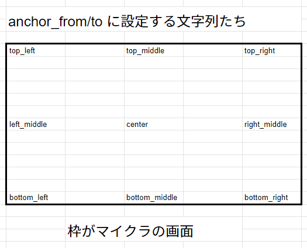

入門
あと、説明力が下手なので伝わるかどうかわからないです。その点ご了承を。。。。
ほんとはJSONの色付けしたかったけど私の技術じゃむりJA
なので申し訳ないけど色なしでがまんしてください。
JSON UIって何？
画像や文字などを表示したり、ボタンやトグルスイッチを置いたりできます。
初歩的なところから初めよう。
でも、ちょっとづつ慣れていけば大丈夫だと思う。
ちょっと待って。その前に。。。
アドオンとか作ってたらもうマスターしてるかもしれないけど、一応...。
https://tokamcwin10.blog.jp/article-43664219
画面に文字を表示してみよう。
リソースパックのmanifestとかは各自で作ってね。
リソースパックの一番最初のフォルダ(manifest.jsonとかあるフォルダ)に
「ui」フォルダを作りましょう。
新しいテキストファイルを作成して、名前を「debug_screen.json」に変えましょう。
このとき、「拡張子を変更すると使えなくなる可能性があります」的なメッセージが出た場合は、
「はい」を選びましょう。
逆にメッセージが出なかった場合、上のメニューの「表示」の中にある「ファイル名拡張子」をONにして
もう一度ファイル名を変えてみましょう。
そしたら、作ったファイルをなんでもいいのでテキストエディタ(例えばメモ帳やNotepad++)で開きましょう。
このコードをそのままコピペしましょう。
{
"namespace": "debug_screen",
"debug_screen_content": {
"type": "panel",
"controls": [
{
"sample_text": {
"type": "label",
"text": "こんにちは！！"
}
}
]
}
}
できたらマイクラに入れてリソースパックを有効化してみましょう。
すると、画面の中央に「こんにちは！！」という文字が出てくるはずです。
※出ない場合は他のリソパが邪魔してるかもしれないです。
他のパックを全部無効にしてみよう。
簡単でしょ(?)
文字の表示場所を変えてみよう。
"sample_text"に、これを追加してみましょう。
"anchor_from": "top_left", "anchor_to": "top_left"
すると、文字の場所が左上に移動します。
基本fromとtoは同じものを入れます。
(それぞれ違うものを入れると中央よりちょっと上... とかの位置にもできるけど
ここでは割愛。)
３分クオリティの表を作ってみました。これを参考に位置を変えてみましょう。

では、文字をずらしてみましょう。
anchor_from・anchor_toでは、画面の大体どの辺に表示するかを指定したけど、
そこから右下に5pxずらす... なんてこともできます。
"sample_text"に、これを追加してみましょう。
"offset": [ 5, 5 ]
すると、文字が右下に5pxずれます。
これは、画面のX方向、Y方向にそれぞれ5pxずらしています。
[ 10, 5 ]にすると、X方向に10pxずれます。
また、マイナス値にすると、X方向は左にずれ、Y方向は上にずれます。
文字のサイズを変えてみよう。
"sample_text"に、これを追加してみましょう。
"font_size": "large"
すると、文字が大きくなります。
largeの他にも、small、extra_largeがあります。
smallにするとちっちゃくなります。
extra_largeにするとめっちゃでかくなります。
これよりもっと大きくしたかったり、もっと細かく設定したい場合は、
font_scale_factorを使いましょう。
"font_size"を"font_scale_factor"に変えて、設定値を2.0(数値)にしましょう。
文字が大きくなります。
値は、1.0がデフォルトの大きさ。
これより大きくすれば大きくなり、逆にこれより小さくすれば文字は小さくなります。
⚠注意⚠
"font_scale_factor"を使ってUnicodeフォントのサイズを変えると文字が見づらくなる可能性があります。
画像を表示してみよう。
一旦debug_screen.jsonの中身全部消して、これを全部コピペしよう。
{
"namespace": "debug_screen",
"debug_screen_content": {
"type": "panel",
"controls": [
{
"sample_images": {
"type": "image",
"size": [ 20, 20 ],
"texture": "textures/blocks/dirt"
}
}
]
}
}
すると、画面の中央に土ブロックのテクスチャが出るはずです。これも、文字と同じように位置をずらしたりできます。
サイズは、「"size": [ 20, 20 ],」のところをいじれば変えれます。
ここまでできたら基本的なことはできました。おつカレーライス(?)
2023/10/17追記
誤字を直しました